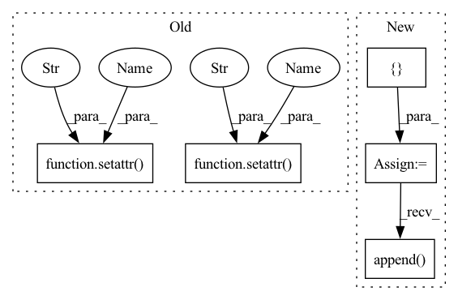

Pattern ID :8722
Before Change
module.register_buffer("zeros", torch.zeros(1, *bias.shape, dtype=bias.dtype, device=module.weight.device))
setattr(module, "use_bf", bias.abs().sum() != 0)
setattr(module , "zero_cache" , module.zeros)
setattr(module , "idxs_cache" , module.idxs)
return module
def forward(self, x):After Change
def from_conv(module: nn.Conv2d, idxs: torch.Tensor, bias):
module.__class__ = ConvExpand
select_idxs = []
current = 0
for i in range(bias.shape[0]):
if i in idxs:
select_idxs.append(current)
current += 1
else:
select_idxs.append( module.weight.shape[0])
select_idxs = torch.tensor(select_idxs)
module.register_buffer("idxs", idxs.to(module.weight.device))
module.register_buffer("select_idxs", select_idxs.to(module.weight.device))In pattern: SUPERPATTERN
Frequency: 3
Non-data size: 5
Instances Fragment ID: 32376750
Project Name: eidoslab/simplify
Commit Name: 20f2d560394960f91d131408660f14299acf9c1d
Time: 2021-07-08
Author: carlo.alberto.barbano@outlook.com
File Name: simplify/layers.py
M Class Name: ConvExpand
N Class Name: ConvExpand
M Method Name: from_conv(3)
N Method Name: from_conv(3)
M Parent Class: nn.Conv2d
N Parent Class: nn.Conv2d
M File Name: simplify/layers.py
N File Name: simplify/layers.py
M Start Line: 39
M End Line: 43
N Start Line: 26
N End Line: 37
Before Change
module.register_buffer("zeros", torch.zeros(1, *bias.shape, dtype=bias.dtype, device=module.weight.device))
setattr(module, "use_bf", bias.abs().sum() != 0)
setattr( module, "zero_cache" , module.zeros)
setattr( module, "idxs_cache" , module.idxs)
return module
def forward(self, x):After Change
def from_conv(module: nn.Conv2d, idxs: torch.Tensor, bias):
module.__class__ = ConvExpand
select_idxs = []
current = 0
for i in range(bias.shape[0]):
if i in idxs:
select_idxs.append( current)
current += 1
else:
select_idxs.append(module.weight.shape[0])
select_idxs = torch.tensor(select_idxs) Fragment ID: 32376751
Project Name: eidoslab/simplify
Commit Name: 20f2d560394960f91d131408660f14299acf9c1d
Time: 2021-07-08
Author: carlo.alberto.barbano@outlook.com
File Name: simplify/layers.py
M Class Name: ConvExpand
N Class Name: ConvExpand
M Method Name: from_conv(3)
N Method Name: from_conv(3)
M Parent Class: nn.Conv2d
N Parent Class: nn.Conv2d
M File Name: simplify/layers.py
N File Name: simplify/layers.py
M Start Line: 39
M End Line: 43
N Start Line: 26
N End Line: 37
Before Change
**kwargs
)
setattr( self, f"optim{ind}" , optimizer) // cannot use pytorch ModuleList for some reason with optimizers
if self.use_ema:
self.ema_unets.append(EMA(unet, **ema_kwargs))
scaler = GradScaler(enabled = amp)
setattr( self, f"scaler{ind}" , scaler)
// gradient clipping if needed
self.max_grad_norm = max_grad_normAfter Change
lr, wd, eps = map(partial(cast_tuple, length = self.num_unets), (lr, wd, eps))
optimizers = []
for unet, unet_lr, unet_wd, unet_eps in zip(decoder.unets, lr, wd, eps):
optimizer = get_optimizer(
unet.parameters(),
lr = unet_lr,
wd = unet_wd,
eps = unet_eps,
group_wd_params = group_wd_params,
**kwargs
)
optimizers.append( optimizer)
if self.use_ema:
self.ema_unets.append(EMA(unet, **ema_kwargs))
Fragment ID: 32376746
Project Name: lucidrains/dalle2-pytorch
Commit Name: 58892135d9bcf117921c885dda161c0b67452096
Time: 2022-06-19
Author: aidan.dempster@gmail.com
File Name: dalle2_pytorch/trainer.py
M Class Name: DecoderTrainer
N Class Name: DecoderTrainer
M Method Name: __init__(10)
N Method Name: __init__(9)
M Parent Class: nn.Module
N Parent Class: nn.Module
M File Name: dalle2_pytorch/trainer.py
N File Name: dalle2_pytorch/trainer.py
M Start Line: 591
M End Line: 620
N Start Line: 577
N End Line: 633
Before Change
// module.register_buffer("select_idxs", select_idxs.to(module.weight.device))
module.register_parameter("bf", torch.nn.Parameter(bias))
module.register_buffer("zeros", torch.zeros(1, 1, *shape[2:], dtype=bias.dtype, device=module.weight.device))
setattr( module, "zero_cache" , module.zeros)
setattr( module, "idxs_cache" , module.idxs)
return module
def forward(self, x):After Change
def from_bn(module: nn.BatchNorm2d, idxs: torch.Tensor, bias, shape):
module.__class__ = BatchNormExpand
select_idxs = []
current = 0
for i in range(bias.shape[0]):
if i in idxs:
select_idxs.append(current)
current += 1
else:
select_idxs.append( module.weight.shape[0])
select_idxs = torch.tensor(select_idxs)
module.register_buffer("idxs", idxs.to(module.weight.device))
module.register_buffer("select_idxs", select_idxs.to(module.weight.device)) Fragment ID: 32376740
Project Name: eidoslab/simplify
Commit Name: 20f2d560394960f91d131408660f14299acf9c1d
Time: 2021-07-08
Author: carlo.alberto.barbano@outlook.com
File Name: simplify/layers.py
M Class Name: BatchNormExpand
N Class Name: BatchNormExpand
M Method Name: from_bn(4)
N Method Name: from_bn(4)
M Parent Class: nn.BatchNorm2d
N Parent Class: nn.BatchNorm2d
M File Name: simplify/layers.py
N File Name: simplify/layers.py
M Start Line: 99
M End Line: 101
N Start Line: 87
N End Line: 98